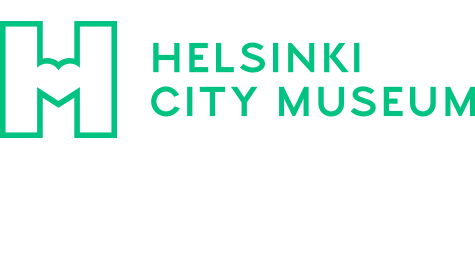

1,051 Wikipedia articles in 47 languages in which images from Category:Files from the Helsinki City Museum are used, grouped by language
This overview is based on this XML output of the GLAMorous tool d.d. 26-01-2024.
It was generated using the GLAMorousToHTML Python script.
Also see the documentation of this tool.
Available languages
Finnish (446)
English (149)
Swedish (119)
French (96)
German (42)
Russian (31)
Czech (21)
Persian (13)
Ukrainian (12)
Spanish (11)
Japanese (9)
Chinese (9)
Nynorsk (8)
Italian (8)
Egyptian Arabic (7)
Dutch (7)
Arabic (5)
Polish (5)
Korean (5)
Standard Estonian (5)
Turkish (4)
Latvian (3)
Romanian (2)
Danish (2)
Serbian (2)
Esperanto (2)
Cebuano (2)
Portuguese (2)
Eastern Armenian (2)
Bulgarian (2)
Vietnamese (2)
Catalan (2)
Belarusian (2)
Afrikaans (1)
Asturian (1)
Walloon (1)
Ido (1)
Hungarian (1)
Galician (1)
Greek (1)
Icelandic (1)
Slovak (1)
Nynorsk (1)
Uzbek (1)
Basque (1)
Inari Sami (1)
Georgian (1)
Finnish (446)
10/80 |
1983 |
1986 |
A. K. Loimaranta |
Aarne Sarvela |
Aino Sibelius |
Ainola |
Albert Järvinen |
Aleksanteri I |
Aleksanterin kimnaasi |
Aleksanterinkatu (Helsinki) |
Aleksanterinkatu 40 |
Alko |
Alppila (ravintola) |
Amazing Race Suomi |
Annankatu 32 |
Antinkatu 1 |
Arkadia n:o 6 |
Arkkitehtitoimisto Kaisa Harjanne ja Maija Suurla |
Asematunneli |
Asunnottomuus |
Autosaattue |
Autotalo |
B. J. Salminen |
Baana |
Bengt Broms (yli-intendentti) |
Berndt Theodor Munck |
Birger Stenman |
Bockin talo |
Constantin Grünberg |
Dallapénpuisto |
Daniel Nyblin |
Dm8 |
Eduskuntavaalit 1970 |
Eduskuntavaalit 1972 |
Eduskuntavaalit 1975 |
Edward (Kentin herttua) |
Eeva Maija Viljo |
Eeva Rista |
Eino Tulenheimo |
Eira |
Eiranranta |
Ekbergin kahvila |
Ele Alenius |
Elsa Arokallio |
Emanuelinkirkko |
Englantilaiskallio |
Erottajan paloasema |
Espoon historia |
Ester Toivonen |
Eteläesplanadi |
Eteläinen suurpiiri |
Eteläsatama |
Eugen Hoffers |
Euroopan turvallisuus- ja yhteistyökonferenssi |
Ewert Saarnio |
Fazerin liiketalo |
Fazerin musiikkikauppa |
Fennian talo |
Fila Helsinki |
Finlandia-talo |
Forum (kauppakeskus Helsingissä) |
Freben rukoushuone |
Fredrik Ekberg |
Fredrikinkatu |
Go-Inn |
Gornyi Dubnjakin taistelu |
Gustaf Järnefelt |
Gustaf Robert Ehrnrooth |
HMY Britannia |
Haaga |
Haagan peruskoulu |
Hakaniemen kauppahalli |
Hakaniemen silta |
Hakaniemenrannan virastotalo |
Hakaniemenranta |
Hakaniementori |
Hakaniemi |
Hanasaaren voimalaitos |
Hanasaari |
Hangon satama |
Harju (Helsinki) |
Heikki Ritavuori |
Helsingfors lyceum |
Helsingin Jyry |
Helsingin Satama |
Helsingin Työväen Teatteri |
Helsingin VPK |
Helsingin eteläinen ruotsalainen seurakunta |
Helsingin eteläinen suomalainen seurakunta |
Helsingin kaupunginjohtaja |
Helsingin kaupunginmuseo |
Helsingin keskuspelastusasema |
Helsingin keskusta |
Helsingin normaalilyseo |
Helsingin pohjoinen ruotsalainen seurakunta |
Helsingin pohjoinen suomalainen seurakunta |
Helsingin päärautatieasema |
Helsingin päätösasiakirja |
Helsingin satamarata |
Helsingin uimastadion |
Helsingin vapaaehtoisen palokunnan talo |
Helsingin yleiskaava |
Helsingin yliopiston metroasema |
Helsinki-Malmin lentoasema |
Helsinki-Vantaan lentoasema |
Helsinki Biennaali |
Henkivakuutusyhtiö Pohjan liiketalo |
Hermannin rantatie |
Hermanninranta |
Hernesaari |
Herttoniemen satamarata |
Herttoniemen öljysatama |
Herttoniemi |
Hesperian puisto |
Hevari |
Hietalahdenranta |
Hietalahti (Helsinki) |
Hilda Flodin |
Holvi |
Hotel de Ruckel |
Hotelli Helsinki |
Hotelli Hesperia |
Hotelli InterContinental Helsinki |
Hotelli Kleineh |
Hotelli Kämp |
Huberin talo |
Hugo Åström |
Huopalahden rautatieasema |
Huopalahdentie |
Hurriganes |
Hypoteekkiyhdistyksen talo |
Hyväntoivonpuisto |
Hämeentie (Helsinki) |
Hämeentien silta (eteläinen) |
Hämeentien silta (pohjoinen) |
Ilmalan varikko |
Impilinna |
Itäinen suurpiiri |
Itäkeskus |
Itämerenkatu |
Ivan Timiriasev |
J. H. Heidenstrauch |
Johanneksenkirkko (Helsinki) |
Johannes Indrenius |
Jollaksen kartano |
Junatie (Helsinki) |
Jätkäsaari |
Jäänmurtajien historia |
K-Kampus |
KOM-teatteri |
Kaakeliuuni |
Kaartin halli |
Kaivohuone |
Kaivokatu (Helsinki) |
Kaivopiha |
Kaivopuiston rautatietunneli |
Kalasatama |
Kallion ala-asteen koulu |
Kampin paloasema |
Kampin villat |
Kansallinen koulutuksen arviointikeskus |
Kantele |
Karhu (Kansallismuseo) |
Kari Hakli |
Kari Rahkamo |
Kasarmikatu 21 |
Kasarmitorin liikerakennus |
Katajanokan tulli- ja pakkahuone |
Katajanokka |
Kauppatori (Helsinki) |
Kehä III |
Keisarillinen hallituskonselji |
Kellosaari |
Kerrostalot Suomessa |
Keski-Pasila |
Keskinen suurpiiri |
Kesykyyhky |
Kesäsiirtola |
Kill City (kortteli) |
Kino-Palatsi |
Kipparlahden metrosilta |
Kluuvi |
Kluuvikatu |
Kolera-allas |
Koleraparakit |
Kolmas linja |
Komisario Palmun erehdys (elokuva) |
Kone- ja Siltarakennus |
Konepaja (Helsinki) |
Koskelan raitiovaunuvarikko |
Kotimaisten kielten keskus |
Koulukoti |
Kruununhaka |
Kruunusillat |
Kruunuvuorenranta |
Kulosaaren huvilakaupunki |
Kulosaaren silta |
Kuninkaala |
Kuntatalo |
Kuopion lentoasema |
Kyläsaaren jätteenpolttolaitos |
Kyläsaari (Helsinki) |
Käpylä |
Käpylän rautatieasema |
Laajasalo |
Laajasalon öljysatama |
Laakso (Helsinki) |
Lasse Virén |
Lastenlinna |
Lastentarhamuseo |
Lauri Hämäläinen |
Lauri Kristian Relander |
Lauttasaaren silta |
Lauttasaari |
Lepakko (rakennus) |
Leppäsuo |
Liikennepoliittinen yhdistys Enemmistö |
Linjat (Helsinki) |
Linnanmäki |
Lippakioski |
Lisa Hagman |
Liukuportaat |
Luettelo Helsingin olympiarakennuksista |
Luettelo Helsingin puistoista |
Luettelo Linnanmäen laitteista |
Luettelo Malmin peruspiirin suojelluista rakennuksista |
Luettelo Pasilan peruspiirin suojelluista rakennuksista |
Luettelo Reijolan peruspiirin suojelluista rakennuksista |
Luettelo Suomen elokuvateattereista |
Luettelo Suomen hotelleista |
Luettelo Suomen sotasairaaloista toisen maailmansodan aikana |
Luettelo Vantaan puistoista |
Luettelo Vironniemen peruspiirin suojelluista rakennuksista |
Luettelo diplomaattisista edustustoista Suomessa |
Luettelo keisarillisista vierailuista Suomessa |
Luettelo ministereistä Suomen valtiovarainministeriössä |
Luettelo vapaista julkisista taideteoksista Suomessa |
Lyhdynkantajat |
Länsisatama |
Länsisataman aluerakentamisprojekti |
Länsiterminaali 1 |
Läroverket för gossar och flickor |
Lönkan |
Maailman Ympäri (Helsinki) |
Maanpuolustuskorkeakoulu |
Maitoauto |
Maitotonkka |
Makasiinipuisto |
Makkaratalo |
Malmin kaupallinen keskikoulu |
Mannerheimintie (Helsinki) |
Mannerheimintien silta |
Marian sairaala |
Marius af Schultén |
Marjukka Riihimäki |
Martti Vainio |
Medica |
Mehiläinen (yritys) |
Mellunmäen metroasema |
Mercedes-Benz 600 |
Meri-Rastila |
Merihaka |
Merikylpylän puisto |
Merisatama |
Metallitalo |
Metrojupakka |
Mieskuoro Laulu-Miehet |
Mika Waltari |
Mikonkatu (Helsinki) |
Moottoripyöräpoliisi |
Munkkiniemen kartano |
Munkkisaari |
Mustavuori (Helsinki) |
Narinkka |
Nihti (Helsinki) |
Nils-Henrik Sandell |
NrI |
Näkinsilta |
OP Yrityspankki |
Olavi J. Mattila |
Olympiaterminaali |
Opetushallitus |
Paasitorni |
Pannukakku (saari) |
Partioleiri |
Pasilan konepaja |
Pasilan rautatieasema |
Pasilan veturitallit |
Pasilansilta |
Pentti Saarikoski |
Pieni Roobertinkatu 7 |
Pietarin seurakunta |
Pikku-Musta |
Pitkäsilta |
Pitäjänmäen rautatieasema |
Pohjoinen suurpiiri |
Pohjois-Savon maakunta |
Puistolan rautatieasema |
Pukeva |
Puotila |
Pyöräily kesäolympialaisissa 1952 |
Ragnar Relander |
Ragnar Ypyä |
Rahastaja |
Raimo Ilaskivi |
Rajavartiolaitos |
Ratikkamuseo |
Rauhankappeli |
Rautatientori |
Rekolan historia |
Roadrunner |
Ruben Jaari |
Ruoholahdensilta |
Ruoholahti |
Ruotsin Helsingin-suurlähetystö |
Ryömintäkaista |
S/S Bore II |
S/S Wellamo (1927) |
Saariniemenkatu 6 |
Saksan Itämeren-divisioona |
Salmisaari |
Saukonpaasi |
Savela (Helsinki) |
Savelanpuisto |
Senaatintori |
Seppo Sillanpää |
Seuramatka |
Seututie 170 |
Shell |
Signe Brander |
Silakkamarkkinat |
Silitysrautatalo (Helsinki) |
Siltasaarenkatu |
Siltavuorenranta |
Siltavuorensalmi |
Siltavuori |
Simo Rista |
Sipoonkorpi |
Sirius (rakennus Helsingissä) |
Sirkus Suomessa |
Snellmaninkatu (Helsinki) |
Sompasaari |
Sosiaalikeskus Satama |
Spar |
Spear Air |
Spårakoff |
Stockmann |
Sturenkadun silta |
Sulhanen Lapinniemen viimeinen saari |
Suomelan talo |
Suomen Akatemia |
Suomen Kommunistinen Puolue |
Suomen Kommunistisen Puolueen historia |
Suomen lippu |
Suomen lähiöt |
Suomen rataverkon historia |
Suomen taloushistoria |
Suomen uinti |
Suomi 1950-luvulla |
Suomi 1970-luvulla |
Suomi 1980-luvulla |
Suora toiminta |
Suruttomain villat |
Susanne Lindholmin murha |
Suvilahden kasarmi |
Suvilahti (Helsinki) |
Svenska lyceum i Helsingfors |
Säätyvaltiopäivät 1863 |
Sörnäinen |
Sörnäisten kruununmakasiini |
Sörnäisten rantatie |
Sörnäisten ruotsalainen seurakunta |
Sörnäisten satama |
Sörnäisten satamarata |
Sörnäistentunneli |
Sörnäs (yritys) |
Tabunovin koulu |
Taidehalli (Helsinki) |
Taiteen edistämiskeskus |
Taivallahti (Helsinki) |
Tammelundin Liikenne |
Teddy & The Tigers |
Telakkakatu |
Tellervo, Tapion tytär |
Tempo (kauppaketju) |
Teollisuuskatu |
Teurastamo (Helsinki) |
Tieteiden talo |
Timo Vakkilainen |
Topeliuksenkatu |
Toralinna |
Tuomari Nurmio |
Tuomari Nurmio ja Köyhien ystävät |
Tuomarinkylän ratsastuskoulu |
Työmiehen vaimo |
Töölö |
Töölön ala-asteen koulu |
Töölön raitiovaunuvarikko |
Töölön tavara-asema |
Töölönlahden puisto |
Töölönlahdenkatu |
Unioninkatu |
Unto Valtanen |
Urho Kekkonen |
Usko Nyström |
Uunisaari |
Uusi Hakaniemensilta |
Uusi Heimolan talo |
Uusi ylioppilastalo |
VR:n makasiinit |
Vaasankatu |
Valio Aimo |
Vallila |
Vallilan raitiovaunuvarikko |
Vallilan siirtolapuutarha |
Valmetin vanha pääkonttori |
Vanha Isäntä |
Vanhakaupunki (Helsinki) |
Varastosiilo |
Vartiosaari |
Veikko O. Järvinen |
Venäjän keisarin kolmikantainen neuvotteluryhmä |
Verkkosaari (Helsinki) |
Veturitie |
Vietnamin sota |
Viikinmäki |
Vilhonvuorenkatu |
Vilhonvuori |
Villa Christiansberg |
Villa Hällebo |
Villa Jonasberg |
Villa Ullas |
Villinki |
Voimatalo |
Vuosaari |
Wivi Lönn |
Wolt |
Yleinen sauna |
Ylioppilastutkintolautakunta |
Yrjö Leino |
Yrjönkadun uimahalli |
Zinnkeller |
Öljysäiliö 468 |
Östersundom |
Östersundomin kartano
English (149)
1952 |
1952 Summer Olympics |
1970 Finnish parliamentary election |
1972 Finnish parliamentary election |
1975 Finnish parliamentary election |
1980s |
1982 |
1983 World Championships in Athletics |
1983 World Championships in Athletics – Women's marathon |
1994 Finnish presidential election |
Aero Flight 311 |
Ainola |
Airport |
Albert Järvinen |
Aleksanterinkatu |
Alexander I of Russia |
Alko |
Amazing Race Suomi |
Asematunneli |
Athletics at the 1952 Summer Olympics |
Basketball Finland |
Ben Zyskowicz |
Bird feeding |
City |
City Council of Helsinki |
Coal in Finland |
Conference on Security and Co-operation in Europe |
Country music |
Crowd |
Cycling at the 1952 Summer Olympics |
Cycling at the 1952 Summer Olympics – Men's individual road race |
Ele Alenius |
Esplanadi |
Feral pigeon |
Finland–Israel relations |
Finland–Japan relations |
Finland–Peru relations |
Finland–Uruguay relations |
Finnish Universal Exhibition |
Football at the 1952 Summer Olympics |
Foreign relations of Finland |
French destroyer Téméraire |
Friedl Kjellberg |
Fuso Maru |
Grand Duchy of Finland |
Hakaniemenranta |
Hakaniemi |
Hakaniemi market hall |
Hakaniemi market square |
Havis Amanda |
Heikki Ritavuori |
Helsinki |
Helsinki Airport |
Helsinki Cathedral |
Helsinki Central Station |
Helsinki Metro |
Helsinki Olympic Stadium |
Helsinki slang |
Hermanni (Helsinki) |
Hietalahdenranta |
High society |
History of Finland |
History of photography |
Homelessness |
Homelessness in Finland |
Housing First |
Hurriganes |
Ilmala depot |
Jean Sibelius |
Jätkäsaari |
Kaisaniemi Park |
Kari Rahkamo |
Katajanokka |
Keskuskatu |
Kirjatalo |
Korkeasaari |
Käpylä railway station |
Lasse Virén |
Lepakko |
Liinamaa Cabinet |
Linnanmäki |
List of airports in Finland |
List of bridges in Finland |
List of defunct airlines of Finland |
List of diplomatic missions in Finland |
List of diplomatic missions of Cuba |
List of diplomatic missions of Israel |
List of diplomatic missions of Japan |
List of diplomatic missions of Peru |
List of diplomatic missions of Uruguay |
List of former equipment of the Finnish Army |
List of people who have received a state funeral |
Lundqvist Building |
Läroverket för gossar och flickor |
MS Aallotar |
MS Jupiter |
Mannerheim League for Child Welfare |
Martti Pokela |
Martti Vainio |
Mehiläinen |
Mikael Agricola Church |
Mikonkatu |
Milk float |
Monochrome photography |
Murder of Susanne Lindholm |
Music of Finland |
Narinkka |
Nasdaq Helsinki |
Nya svenska samskolan |
Opposition to United States involvement in the Vietnam War |
Oulunkylä railway station |
Paavo Tynell |
Pan-Finnicism |
Parliament of Finland |
Pasila railway station |
Perceptual hashing |
Photograph |
Political history of Finland |
R-kioski |
Raimo Ilaskivi |
Rockabilly |
Ruben Jaari |
Sandvikens Skeppsdocka och Mekaniska Verkstad |
School meal |
Senate Square, Helsinki |
Signe Brander |
Sompasaari |
Supercell (video game company) |
Svenska normallyceum i Helsingfors |
Sörnäinen |
Sörnäinen Harbour |
Sörnäisten rantatie |
Teboil |
Teollisuuskatu |
Teurastamo |
Transport in Finland |
University of Helsinki metro station |
Urho Kekkonen |
Uspenski Cathedral |
VR Class Dr13 |
VR warehouses |
Valimo railway station |
Venezuela at the 1952 Summer Olympics |
Vuosaari |
Wagon |
White Guard (Finland) |
Wivi Lönn |
Wäinö Palmqvist |
Zinnkeller
Swedish (119)
Albert Järvinen |
Alphyddan, Helsingfors |
Alppaviljongen |
Andsten |
Arkadia nr 6 |
Arkadiabacken |
Arkadiagatan |
Arkadiateatern |
Arla (Finland) |
Bilhuset |
Broholmen |
Brunnshuset |
Christian Bohnhof |
Cisse Häkkinen |
Crowne Plaza – Hesperia |
Cygnaeusskolan, Helsingfors |
Djurgårdsviken |
Eeva Maija Viljo |
Eikt |
Einari Teräsvirta |
Ekbergs Café |
Ele Alenius |
Esbo tull |
Finlands allmänna industriutställning 1876 |
Fiskehamnen |
Fransk-finska skolan i Helsingfors |
Fredriksgatan |
Frithiof Mieritz |
Fågelsången, Helsingfors stad |
Förskola |
Första maj |
Gabriel Andstén |
Gaslysnings ab |
Glaspalatspilen |
Gustaf Järnefelt |
HMY Britannia |
Hagnäsbron |
Hankkijahuset |
Havshagen |
Heikki Savolainen (gymnast) |
Helsingfors arbis |
Helsingfors centrum |
Helsingfors lyceum |
Helsingfors stift |
Helsingfors synagoga |
Helsingfors universitets metrostation |
Helsinki Shipyard Oy |
Hemholmen Ab |
Hippodromen, Helsingfors |
Hurriganes |
Isbrytare |
J.D. Stenberg & Söner |
Jordbrukarnas mjölkcentrals byggnadskomplex i Kampen |
Kajsaniemiviken |
Knekten, Helsingfors |
Kommunalvalen i Finland 1968 |
Kronbergsfjärden |
Kronbergsstranden |
Laguska skolan |
Larin Paraske |
Laurellska skolan i Helsingfors |
Lista över slott och herrgårdar i Nyland |
Läroverk |
Läroverket för gossar och flickor |
Långa bron |
Majakka |
Mannerheimplatsen |
Martti Vainio |
Maskin och Bro |
Medborgartorget |
Mellersta Böle |
Moby Orli |
Mysteriet Rygseck, kommissarie Palmu |
Narinken |
Nya svenska flickskolan i Helsingfors |
Nya svenska samskolan |
Nylandsgatan |
Olympiabyn |
Oskar Lindroos |
Paasikiviplatsen |
Packard |
Ralph Erskine |
Restaurang Kajsaniemi |
Sandvikens Skeppsdocka och Mekaniska Verkstad |
Sandvikens varv |
Senaten för Finland |
Signe Brander |
Skatuddens varv |
Skillnadens brandstation |
Sokos-huset |
Statsbegravning |
Strömmingsmarknad |
Strömmingsmarknaden i Helsingfors |
Sveaborgs varv |
Svenska Teatern |
Svenska flickskolan i Helsingfors |
Svenska lyceum i Helsingfors |
Svenska normallyceum |
Svenska samskolan i Helsingfors |
Sveriges ambassad i Helsingfors |
Säckstation |
Sörnäs |
Tabunoffska huset |
Tavast tull |
Teddy & the Tigers |
Topeliusskolan |
Trekanten, Helsingfors |
Tölö sockerbruk |
Tölö spårvagnsdepå |
Tölö svenska samskola |
Tölö tull |
Urho Kekkonen |
Uspenskijkatedralen, Helsingfors |
VR:s blå vagnar |
VR Dm9 |
Villa Arkadia |
Villa Hagasund |
Åbo kasern |
Åggelby svenska samskola
French (96)
1945 en Finlande |
Agence nationale de l'éducation |
Aurorankatu |
Castréninkatu |
Centre-ville d'Helsinki |
Château d'eau d'Haukilahti |
Eerikinkatu (Helsinki) |
Eeva Rista |
Eino Tulenheimo |
Eiranranta |
Ensi linja |
Fleminginkatu |
Franzénia |
Hakaniemenranta |
Hakaniemi |
Hakaniemi (métro d'Helsinki) |
Heikki Savolainen (gymnastique) |
Helsingin yliopisto (métro d'Helsinki) |
Helsinginkatu |
Hermannin rantatie |
Herttoniemi (métro d'Helsinki) |
Hämeentie |
Iso Koivusaari |
Juhani Katainen |
Junatie (Helsinki) |
Jätkäsaari |
K-Kampus |
Kalasatama |
Kalasatama (métro d'Helsinki) |
Kallahdenniemi |
Kamppi (métro d'Helsinki) |
Kapteeninkatu |
Kari Rahkamo |
Kolmas linja |
Konepaja |
Kruunusillat |
Kruunuvuorensilta |
Kulosaari (métro d'Helsinki) |
Kuopio |
Laajasalo |
Laakso (Helsinki) |
Laivurinkatu |
Lapinlahdenkatu |
Lasse Virén |
Ligne Jokeri |
Linjat |
Liste des bâtiments historiques d'Helsinki |
Liste des parcs d'Helsinki |
Länsisatama |
Maison Finlandia |
Martti Vainio |
Mikonkatu |
Moby Orli |
Myllypuro (métro d'Helsinki) |
Neljäs linja |
Nihti (Helsinki) |
Nordenskiöldinkatu |
Parc Alppi |
Parc Arvo Ylppö |
Parc Dallapé |
Parc de Lapinlahti |
Parc de Töölönlahti |
Parc du rocher d'Ursin |
Parti communiste de Finlande (1918) |
Pengerpuisto |
Pietarinkatu |
Pont d'Hakaniemi |
Pont de Brobacka |
Port de Sörnäinen |
Porthaninkatu (Helsinki) |
Punavuori |
R-kioski |
Représentations diplomatiques de l'Uruguay |
Représentations diplomatiques du Pérou |
Roihuvuorentie |
Saga (ferry) |
Siltasaarenkatu |
Sompasaari |
Sörnäinen |
Sörnäisten rantatie |
Tarkk'ampujankatu |
Tehtaankatu |
Teollisuuskatu |
Toinen linja |
Tunnel de Sörnäinen |
Töölönkatu |
Urho Kekkonen |
Uudenmaankatu (Helsinki) |
Vaasankatu |
Vartiosaari |
Viikintie |
Village olympique |
Voimatalo |
Wivi Lönn |
Yrjönkatu |
Élection présidentielle finlandaise de 1994
German (42)
Aeronaut (Fluggesellschaft) |
Armi Kuusela |
Bahnhof Pasila |
Bildungssystem in Finnland |
Ele Alenius |
Elsa Arokallio |
Gustaf Järnefelt |
Helsinki |
Hurriganes |
Karair |
Kari Rahkamo |
Karl Schultz-Köln |
Leichtathletik-Europameisterschaften 1971/20 km Gehen der Männer |
Leichtathletik-Europameisterschaften 1971/50 km Gehen der Männer |
Leichtathletik-Europameisterschaften 1971/Marathon der Männer |
Liste bedeutender Architektinnen |
Liste der Auslandsvertretungen Uruguays |
Liste der Biografien/Tal |
Liste der Leichten Kreuzer |
Martta Martikainen-Ypyä |
Martti Talvela |
Martti Vainio |
Olympiastadion Helsinki |
Olympische Sommerspiele 1948/Leichtathletik |
Olympische Sommerspiele 1948/Leichtathletik – Speerwurf (Männer) |
Olympische Sommerspiele 1952/Fußball/Spiele |
Olympische Sommerspiele 1952/Leichtathletik |
Olympische Sommerspiele 1952/Leichtathletik – 5000 m (Männer) |
Olympische Sommerspiele 1952/Leichtathletik – 50 km Gehen (Männer) |
Olympische Sommerspiele 1952/Leichtathletik – Marathon (Männer) |
Olympische Sommerspiele 1952/Radsport – Mannschaftswertung Straße (Männer) |
Olympische Sommerspiele 1952/Radsport – Straßenrennen (Männer) |
Olympische Sommerspiele 1952/Schwimmen – 4 × 100 m Freistil (Frauen) |
Olympische Sommerspiele 1956/Leichtathletik – Dreisprung (Männer) |
Olympische Sommerspiele 1960/Leichtathletik – Dreisprung (Männer) |
Philharmonisches Orchester Helsinki |
R-kioski |
Sablatnig P III |
Schnellstraßenbahnlinie 15 (Helsinki) |
Svenska Teatern (Helsingfors) |
Ullanlinna |
Voimatalo
Russian (31)
Hurriganes |
Supercell |
Автомобильная заправочная станция |
Александровский театр |
Брандер, Сигне |
Великое княжество Финляндское |
Вийк, Мария |
Выборгский железнодорожный вокзал (1913) |
Золотая команда |
Карельское академическое общество |
Ларин Параске |
Лийпола, Юрьё |
Музей естествознания (Хельсинки) |
Мунккиниеми |
Памятник Александру II (Хельсинки) |
Пеллинен, Онни |
Пикку-Мустасаари |
Пимен (патриарх Московский) |
Рахкамо, Кари |
Русский язык в Финляндии |
Саволайнен, Хейкки Ильмари |
Табуновская школа |
Тойвонен, Эстер |
Торговый центр |
Умершие в ноябре 2023 года |
Филипп, герцог Эдинбургский |
Футбол на летних Олимпийских играх 1952 |
Хельсинки-Вантаа |
Хельсинки-Малми |
Хельсинкский университет (станция метро) |
Ювеналий (Поярков)
Czech (21)
1947 ve fotografii |
Constantin Grünberg |
Eeva Rista |
Eino Heinonen |
Gunnar Lönnqvist |
Helsinki (železniční stanice) |
Helsinská ústřední knihovna Oodi |
Hurriganes |
Lasse Virén |
Létající Finové |
Martti Vainio |
Okres Ullanlinna |
Pasák (hra) |
Raimo Ilaskivi |
Rastila Camping |
Seznam finských fotografek |
Signe Branderová |
Simo Rista |
Třída Aventurier |
Väinö Kannisto |
Wivi Lönn
Persian (13)
تراموا هلسینکی |
دوچرخهسواری در بازیهای المپیک تابستانی ۱۹۵۲ |
لپاککو |
لینانمکی |
موزه شهر هلسینکی |
هاویس آماندا |
هرماننی |
هیکی لیماتاینن |
ویسکولما |
ویوی لون |
پارک کایسانیمی |
کایووپوئیستو |
کلیسای جامع اوسپنسکی
Ukrainian (12)
Ільмала (депо) |
Гаканіемі (район) |
Гельсінкі-Центральний |
Гельсінкі (аеропорт) |
Карельська Академічна Спілка |
Лааясало |
Марія Війк |
Мері-Растіла (квартал) |
Олімпійський стадіон (Гельсінкі) |
Пам'ятник Олександрові II (Гельсінкі) |
Серняйнен (район) |
Сіґне Брандер
Spanish (11)
1952 |
Heikki Savolainen |
Kaapelitehdas |
Kari Rahkamo |
Kruunusillat |
Martti Vainio |
Pandemia de COVID-19 en Finlandia |
Relaciones Finlandia-Uruguay |
Teatro Sueco |
Urho Kekkonen |
Vuelo 311 de Aero
Japanese (9)
1952年ヘルシンキオリンピック |
アルマス・リンドグレン |
ショッピングセンター |
スウェーデン系フィンランド人 |
ヘルシンキ |
ヘルシンキ市電Nr I形電車 |
ミカ・ワルタリ |
ヨケリ・ライトレール |
在フィンランド日本国大使館
Chinese (9)
Supercell (游戏公司) |
克鲁农哈卡 |
单色摄影 |
埃拉 (赫尔辛基) |
拉克索 |
芬兰华人 |
芬兰大公国 |
芬兰大厦 |
赫爾辛基猶太會堂
Nynorsk (8)
Cruiseferge |
Degerö |
EM i friidrett 1971 |
Finland |
Friidrett under Sommer-OL 1952 – Spydkast kvinner |
Heikki Savolainen |
MS «Jupiter» (Fjord Line) |
Martti Vainio
Italian (8)
Congestione stradale |
Istruzione in Finlandia |
Kari Rahkamo |
Maria Wiik |
Martti Talvela |
Martti Vainio |
Supercell (azienda) |
Wivi Lönn
Egyptian Arabic (7)
البرت يرفينن |
التانجو الفنلندى |
رايمو ايلاسكيڤى |
كنيس سيناجوجا هلسنجين |
ماريوس اف ستشولتين |
محطة هلسنكى المركزيه |
هيكى سافولاينن
Dutch (7)
Centraal station van Helsinki |
Kabinet-Liinamaa |
Kaisaniemi (district in Helsinki) |
Koninklijke Nederlandse Stoomboot-Maatschappij |
Magische Magyaren |
Tähtitorninvuori |
Wivi Lönn
Arabic (5)
ألبرت يرفينن |
جمعية كاريليا الأكاديمية |
سوومنلينا |
طائر |
محطة قطارات هلسنكي المركزية
Polish (5)
Katajanokka |
Martti Vainio |
ORP Komendant Piłsudski |
Raimo Ilaskivi |
Świadkowie Jehowy w Finlandii
Korean (5)
마르티 바이니오 |
버드피딩 |
사우나 |
카를로 유호 스톨베리 |
핀란드사 연표
Standard Estonian (5)
Aeronaut |
Eesti merejõud |
Pikku Mustasaari |
Svenska Teatern |
Urho Kekkonen
Turkish (4)
Kuş besleme |
Larin Paraske |
Lasse Virén |
Sokak güvercini
Latvian (3)
Aeronaut |
Nokia vēsture |
Onni Pellinens
Romanian (2)
Atletism la Jocurile Olimpice de vară din 1952 |
Lasse Virén
Danish (2)
Martti Talvela |
Urho Kekkonen
Serbian (2)
Светско првенство у атлетици на отвореном 1983. |
Светско првенство у атлетици на отвореном 1983 — 5.000 метара за мушкарце
Esperanto (2)
Morto |
Urho Kekkonen
Cebuano (2)
Sörnäinen |
Östersundom
Portuguese (2)
Armi Kuusela |
Heikki Savolainen
Eastern Armenian (2)
Զբոսաշրջությունը Ֆինլանդիայում |
Իսրայելի դիվանագիտական առաքելությունների ցանկ
Bulgarian (2)
Жан Сибелиус |
Мика Валтари
Vietnamese (2)
Phòng tắm hơi |
Quốc hội Phần Lan
Catalan (2)
Heikki Savolainen |
Sinagoga de Hèlsinki
Belarusian (2)
Вялікае Княства Фінляндскае |
Хейкі Ільмары Савалайнен
Afrikaans (1)
Helsinki-lughawe
Asturian (1)
Urho Kekkonen
Walloon (1)
Catedråle luteryinne di Helsinki
Ido (1)
Olimpiala Ludi en Helsinki, 1952
Hungarian (1)
Helsinki főpályaudvar
Galician (1)
Acta de Helsinqui
Greek (1)
Κεντρικός σταθμός του Ελσίνκι
Icelandic (1)
Ungverska karlalandsliðið í knattspyrnu
Slovak (1)
Helsinská univerzita
Nynorsk (1)
Martti Vainio
Uzbek (1)
Supercell Oy
Basque (1)
Hakaniemi
Inari Sami (1)
Staatâliih hävdidmeh
Georgian (1)
ურჰო კეკონენი